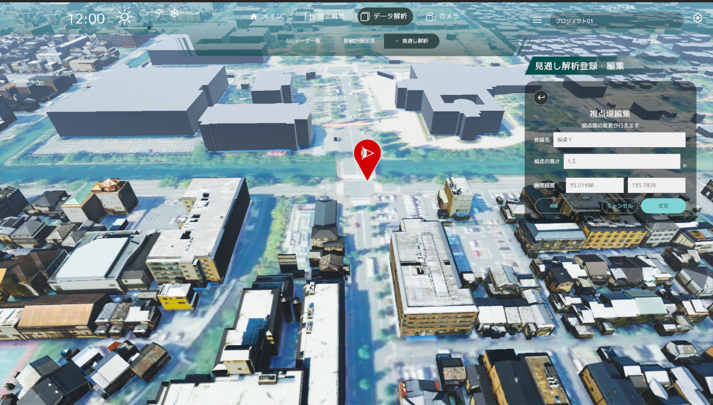
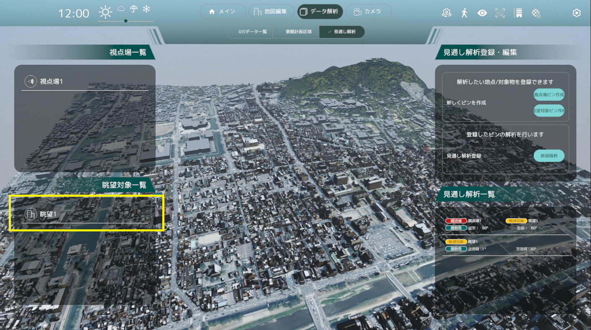
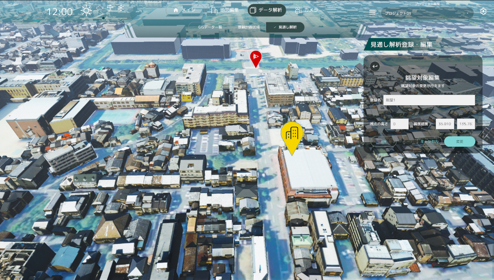

見通し解析機能
設定した視点場から眺望対象迄の見えない範囲について解析します。
視点場の作成
 「視点場ピン作成」を選択して下さい
「視点場ピン作成」を選択して下さい
「登録名」と「視点の高さ」を入力した後、
地図上をクリックするとクリックした地点に赤のマーカーが出現します。
マーカーを置いた状態で 「作成」ボタンを押すと
視点場一覧に作成した視点場が登録されます。
眺望対象の作成
「眺望対象ピン作成」を選択して下さい
「登録名」と「視点の高さ」を入力した後、
地図上をクリックするとクリックした地点に黄色のマーカーが出現します。
マーカーを置いた状態で 「作成」ボタンを押すと
眺望対象一覧に作成した眺望対象が登録されます。
見通し解析登録
新しい解析データを作成します。
見通し解析登録より「新規登録」を押して下さい
眺望視点
眺望から360度の範囲で可視範囲の確認が出来ます。

「眺望視点」を押して下さい
眺望選択
黄色枠で囲まれている「選択」を押して、眺望を選択して下さい
角度 / 距離選択
黄色枠で囲まれている「選択」を押して、角度 / 距離を設定して下さい
選択した眺望から
- 上方向の角度
- 下方向の角度
- 確認できる距離
を設定する事が可能です。値が確認できたら「決定」を押して下さい
登録
眺望視点からの見通しが確認できたら、
「作成」を押して見通し解析データを登録して下さい 解析リストに作成した解析データが反映されます
視点場→眺望対象
選択した視点場から眺望対象迄の範囲の見通しを解析します
「視点場 → 眺望対象」を押して下さい
眺望対象選択
眺望対象選択を押して、解析したい対象の眺望対象選択して下さい
視点場選択
視点場の「選択」を押して、確認したい視点場を選択して下さい
角度選択
視野角の設定をする為に黄色い枠で囲まれた「設定」を押して下さい

選択した視点場から眺望対象の範囲で、見通しできない領域が確認できます。 ここで
- 視点場から眺望対象の上下角
- 視点場から眺望対象を見た際の左右角
を設定して下さい
範囲が決まったら「決定」を押して下さい
作成
視点場と眺望対象、確認する角度と範囲が決定しましたら 「作成」を押して下さい 解析リストに作成した解析データが反映されます
解析リスト編集
画面右下の「見通し解析一覧」の見通し解析データをクリックすると、作成した見通し解析データの編集が可能です。
- 視点場→眺望対象 視点場→眺望対象解析
の手順で修正する事ができます
- 眺望対象 眺望視点解析
の手順で修正する事ができます
視点場編集
視点場リストから視点場を選択すると、選択した視点場の編集が可能になります
名称の変更や場所を修正して下さい 
場所はマップをクリックする事で変更できます。
修正が終りましたら
- 削除
- キャンセル
- 変更
で適宜反映させる事が可能です
眺望対象編集
眺望対象リストから眺望対象を選択すると、選択した眺望対象の編集が可能になります

名称の変更や場所を修正して下さい 
場所はマップをクリックする事で変更できます。
修正が終りましたら
- 削除
- キャンセル
- 変更
で適宜反映させる事が可能です